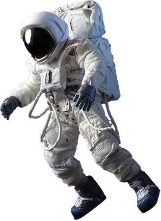

ASTRONOMY PICTURE OF THE DAY
Descubra os cosmos! Cada dia é apresentado por uma fotografia do nosso fascinante universo, juntamente com uma breve explicação escrita por um astrônomo profissional. O Astronomy Picture of the Day é mantido desde 20 de Junho de 1995 pela NASA e pela Universidade Tecnológica de Michigan.